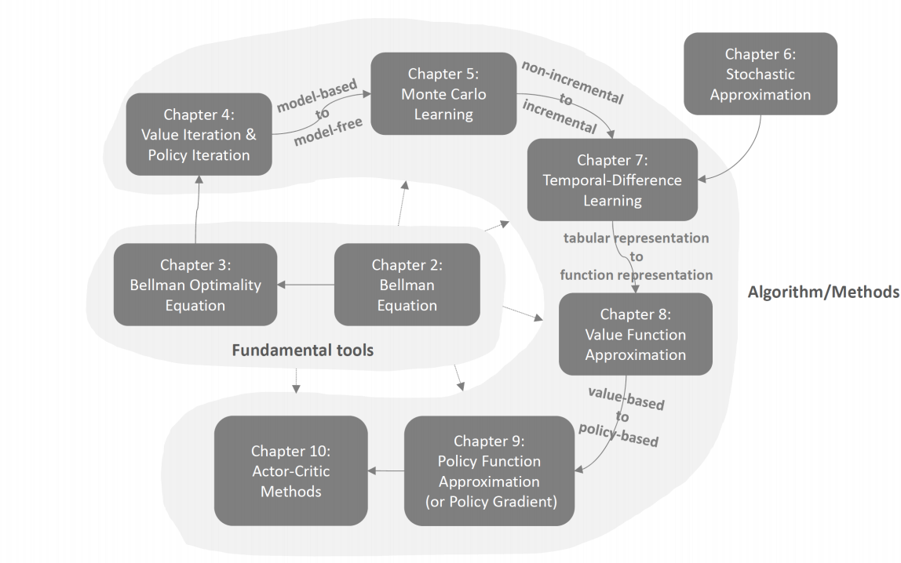
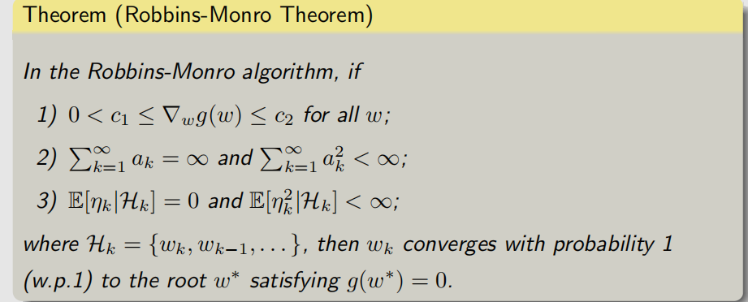
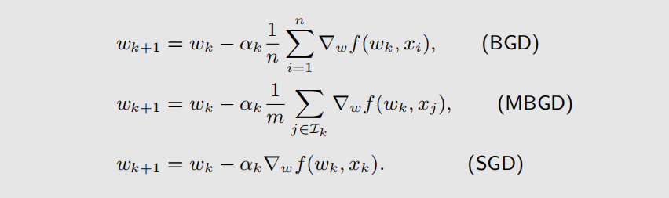
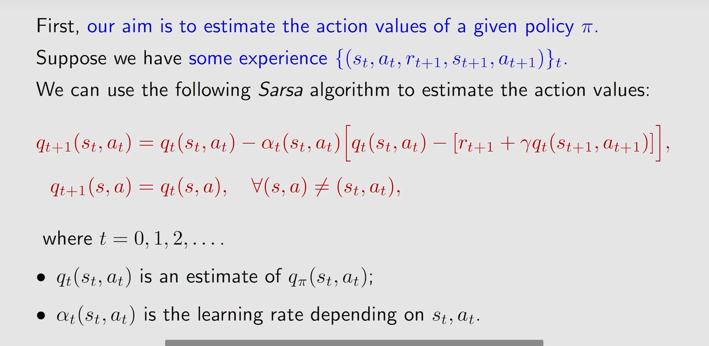
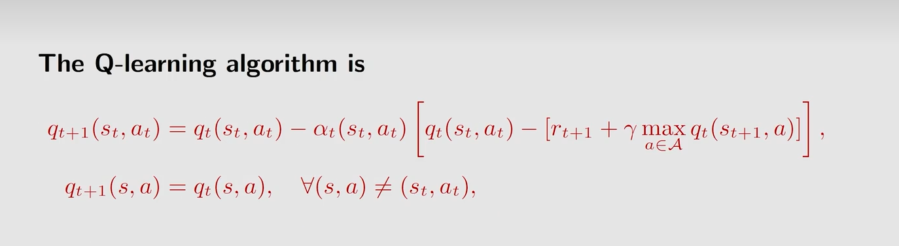

2.state value
3.bellman equation

4.state transition matrix

5.action value


1.boostrapping、v=r+γPv
2.state value
3.bellman equation
4.state transition matrix
5.action value
1.BOE


2.Fixed point、contraction mapping、contraction mapping theorem

3.value iteration algorithm
1.value iteration algorithm[PU、VU]
2.policy iteration algorithm[PE、PI]

3.truncated policy iteration algorithm

1.model-based、model-free
2.Monte Carlo estimation
3.MC Basic

4.MC Exploring Starts、generalized policy iteration(GPI)

5.soft policy、MC Epsilon-Greedy、exploitation(开发)、exploration

1.Stochastic Approximation
2.Robbins-Monro


3.gradient descent(GD)
batch gradient descent(BGD)
Stochastic gradient descent(SGD)
mini-batch gradient descent(MBGD)

1.TD algorithm


2.Sarsa


3.n-step Sarsa

4.Q-learning、on-policy、off-policy



5.summary